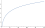

Design & Analysis: Algorithms
11: How Fast To Sort
Outline of the lecture
- Lower Bound for Sorting by Comparison
- Bucket Sort
Lower Bound for Sorting by Comparison
How Fast Can We Sort?
- What is a lowerbound on the runtime of any sorting algorithm?
- We know that $\Omega(n)$ is a trivial lowerbound
- But all the algorithms we’ve seen so far are $O(n \log n)$ (or $O(n^2)$), so is $\Omega(n \log n)$ a lowerbound?
Comparison Sorts
- Definition: An sorting algorithm is a comparison sort if the sorted order they determine is based only on comparisons between input elements.
- Heapsort, mergesort, quicksort, bubblesort, and insertion sort are all comparison sorts
- We will show that any comparison sort must take $\Omega(n \log n)$
$\Omega(g(n)) = \{f(n):$ there exist positive constants $c$ and $n_0$ such that $0 \leq cg(n) \leq f(n)$ for all $n \geq n_0\}$
Comparisons
- Assume we have an input sequence $A = (a_1, a_2, . . . , a_n)$
- In a comparison sort, we only perform tests of the form $a_i < a_j$ , $a_i \leq a_j$ , $a_i = a_j$ , $a_i \geq a_j$ , or $a_i > a_j$ to determine the relative order of all elements in $A$
- We’ll assume that all elements are distinct, and so note that the only comparison we need to make is $a_i \leq a_j$.
- This comparison gives us a yes or no answer
Decision Tree Model 1/2
- A decision tree is a full binary tree that gives the possible sequences of comparisons made for a particular input array, $A$
- Each internal node is labelled with the indices of the two elements to be compared
- Each leaf node gives a permutation of $A$
Decision Tree Model 2/2
- The execution of the sorting algorithm corresponds to a path from the root node to a leaf node in the tree.
- We take the left child of the node if the comparison is $\leq$ and we take the right child if the comparison is $>$
- The internal nodes along this path give the comparisons made by the algorithm, and the leaf node gives the output of the sorting algorithm.
Leaf Nodes
- Any correct sorting algorithm must be able to produce each possible permutation of the input
- Thus, there must be at least $n!$ leaf nodes
- The length of the longest path from the root node to a leaf in this tree gives the worst case run time of the algorithm (i.e. the height of the tree gives the worst case runtime)
Example
- Consider the problem of sorting an array of size two: $A = (a_1, a_2)$
- Following is a decision tree for this problem.
In Class Exercise 
- Give a decision tree for sorting an array of size three: $A = (a_1, a_2, a_3)$
- What is the height? What is the number of leaf nodes?
Height of Decision Tree
- What is the height of a binary tree with at least $n!$ leaf nodes?
- If $h$ is the height, we know that $2^h \geq n!$
- Taking $\log$ of both sides, we get $h \geq \log(n!)$

Height of Decision Tree
- What is $log(n!)$?
- It is \begin{align} \log(n (n − 1) \dots 1) &\fragment{}{= \log n + \log(n − 1) + · · · + 0}\\ & \geq \frac{n}{2} \log(\frac{n}{2})\\ &\geq \frac{n}{2}(\log n − \log 2)\\ &= \Omega(n \log n) \end{align}
Take Away Points
- As proven, any comparison-based sorting algorithm takes $\Omega(n \log n)$ time
- This does not mean that all sorting algorithms take $\Omega(n \log n)$ time
- In fact, there are non comparison-based sorting algorithms which, under certain circumstances, are asymptotically faster.
Bucket Sort
- Bucket sort assumes that the input is drawn from a uniform distribution over the range $[0, 1)$
- Basic idea is to divide the interval $[0, 1)$ into $n$ equal size regions, or buckets
- We expect that a small number of elements in $A$ will fall into each bucket
- To get the output, we can sort the numbers in each bucket and just output the sorted buckets in order
Implementation
from math import floor
def bucketsort(seq):
n = len(seq)
bucketlist = [[] for x in range(n)]
for element in seq:
bucketlist[floor(n*element)].append(element)
r = []
for bucket in bucketlist:
if bucket:
ins_sort_rec(bucket, len(bucket)-1)
r += bucket
return r
def ins_sort_rec(seq, i):
if i==0: return # Base case -- do nothing
ins_sort_rec(seq, i-1) # Sort 0..i-1
j = i # Start "walking" down
while j > 0 and seq[j-1] > seq[j]: # Look for OK spot
seq[j-1], seq[j] = seq[j], seq[j-1] # Keep moving seq[j] down
j -= 1 # Decrement j
t = np.random.rand(10000000)
tcopy = t.copy()
%time r = bucketsort(t)
CPU times: user 13.1 s, sys: 475 ms, total: 13.5 s
Wall time: 13.6 s
%time r = quicksort(tcopy)
CPU times: user 47.2 s, sys: 732 ms, total: 47.9 s
Wall time: 48.1 s
Claim: runtime complexity
- Claim: If the input numbers are distributed uniformly over the range $[0, 1)$, then Bucket sort takes expected time $O(n)$
- Let $T(n)$ be the run time of bucket sort on a list of size $n$
- Let $n_i$ be the random variable giving the number of elements in bucket $B[i]$
-
Then $T(n) = \Theta(n) + \sum_{i=0}^{n-1} O(n_i^2)$
Analysis
- We know $T(n) = \Theta(n) + \sum_{i=0}^{n-1} O(n_i^2)$
- Taking expectation of both sides, we have
\begin{align} \prob{E}{T(n)} &= \prob{E}{\Theta(n) + \sum_{i=0}^{n-1} O(n_i^2)}\\ &= \prob{E}{\Theta(n)} + \sum_{i=0}^{n-1} \prob{E}{O(n_i^2)}\\ &= \Theta(n) + \sum_{i=0}^{n-1} O(\prob{E}{n_i^2}) \end{align}
- The second step follows from linearity of expectation
- The last step follows from it as well for any constant $a$ and random variable $X$, $\prob{E}{aX} = a\prob{E}{X}$
Analysis
- We claim that $\prob{E}{n_i^2} = 2 − 1/n$
- To prove this, we define indicator random variables: $X_{ij} = 1$ if $A[j]$ falls in bucket $i$ and $0$ otherwise (defined for all $i$, $0 \leq i \leq n − 1$ and $j$, $0 \leq j \leq n-1$)
- Thus, $n_i = \sum_{j=0}^{n-1} X_{ij}$
- We can now compute $\prob{E}{n^2_i}$ by expanding the square and regrouping terms
Analysis
\begin{align} \prob{E}{n^2_i} &\fragment{1}{=\prob{E}{(\sum_{j=0}^{n-1} X_{ij})^2}}\\ &\fragment{2}{=\prob{E}{\displaystyle\sum_{j=0}^{n-1}\displaystyle\sum_{k=1}^{n-1} X_{ij}X_{ik}}}\\ &\fragment{3}{=\prob{E}{\sum_{j=0}^{n-1} X_{ij}^2 + \displaystyle\sum_{0\leq j \leq n-1}\displaystyle\sum_{0\leq j \leq n-1, k\ne j} X_{ij}X_{ik}}}\\ &\fragment{4}{=\sum_{j=0}^{n-1}\prob{E}{X_{ij}^2} + \displaystyle\sum_{0\leq j \leq n-1}\displaystyle\sum_{0\leq j \leq n-1, k\ne j} \prob{E}{X_{ij}X_{ik}}} \end{align}- We can evaluate the two sums separately. $X_{ij}$ is $1$ with probability $1/n$ and $0$ otherwise
- Thus $\prob{E}{X_{ij}^2} = 1 \times (1/n) + 0 \times (1 − 1/n) = 1/n$
- Where $k \ne j$, the random variables $X_{ij}$ and $X_{ik}$ are independent
- For any two independent random variables $X$ and $Y$, $\prob{E}{XY} = \prob{E}{X}\prob{E}{Y}$
- Thus we have that $$ \prob{E}{X_{ij}X_{ik}} = \prob{E}{X_{ij}}\prob{E}{X_{ik}} = 1/n\times 1/n = 1/n^2 $$
Substituting these two expected values back into our main
equation, we get:
\begin{align}
\prob{E}{n^2_i} &\fragment{1}{=\sum_{j=0}^{n-1}\prob{E}{X_{ij}^2} + \displaystyle\sum_{0\leq j \leq n-1}\displaystyle\sum_{0\leq j \leq n-1, k\ne j} \prob{E}{X_{ij}X_{ik}}}\\
&\fragment{2}{=\sum_{j=0}^{n-1}\frac{1}{n} + \displaystyle\sum_{0\leq j \leq n-1}\displaystyle\sum_{0\leq j \leq n-1, k\ne j} \frac{1}{n^2}}\\
&\fragment{3}{=n \frac{1}{n} + n (n-1) \frac{1}{n^2}}\\
&\fragment{4}{=1 + \frac{n - 1}{n} = 2 - \frac{1}{n}}
\end{align}
- Recall that $\prob{E}{T(n)}= \Theta(n) + \sum_{i=0}^{n-1} O(\prob{E}{n_i^2})$
- Let's plug in $\prob{E}{n^2_i} = 2-1/n $ $$\prob{E}{T(n)}= \Theta(n) + \sum_{i=0}^{n-1} O(2-1/n) = \Theta(n)$$
- Thus the entire bucket sort algorithm runs in expected linear time